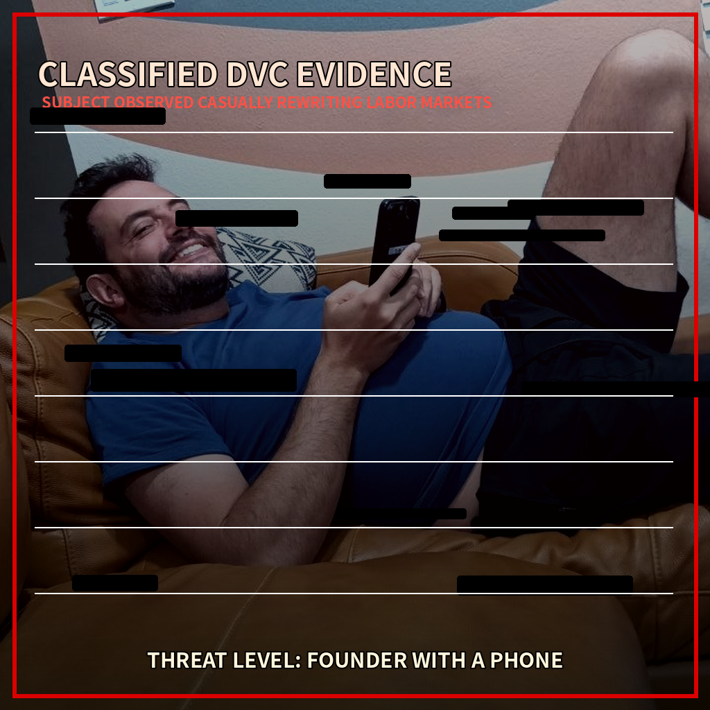
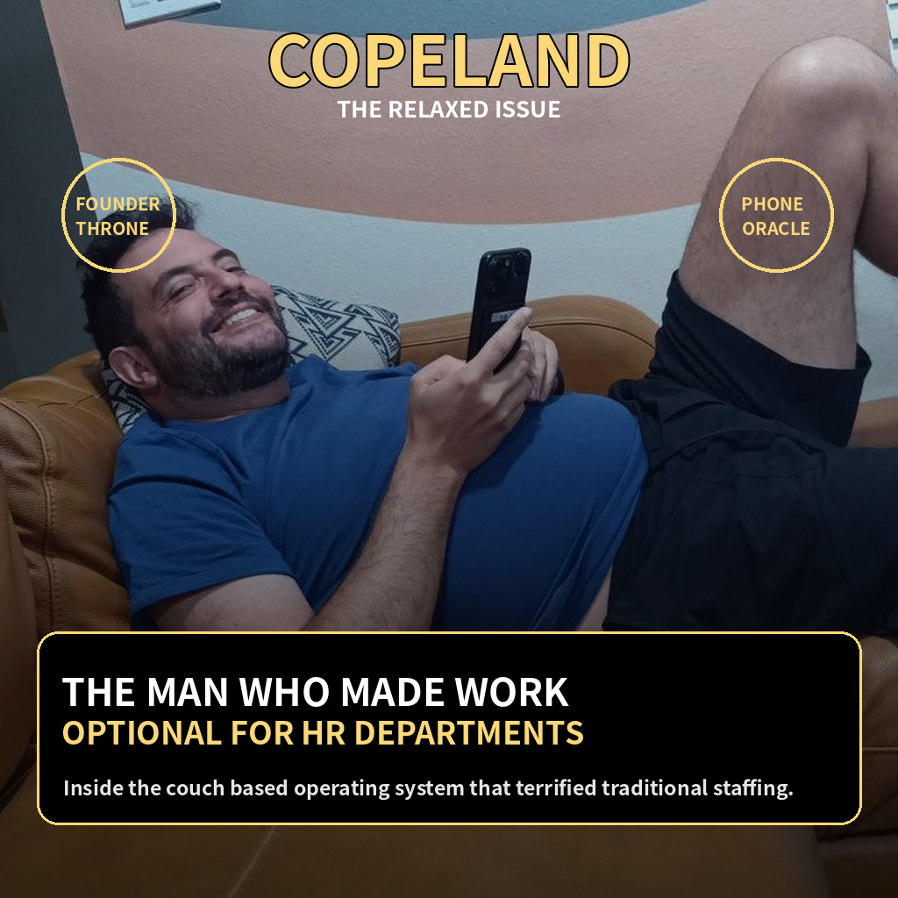
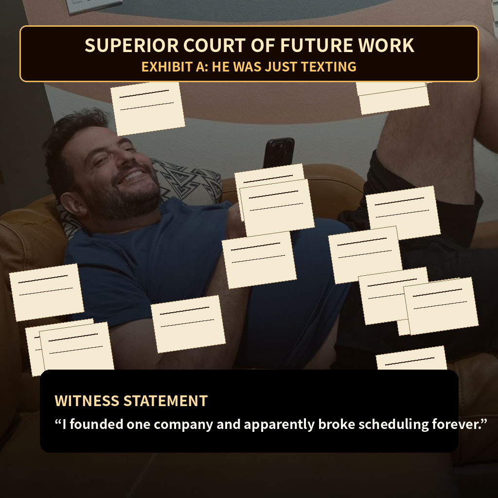
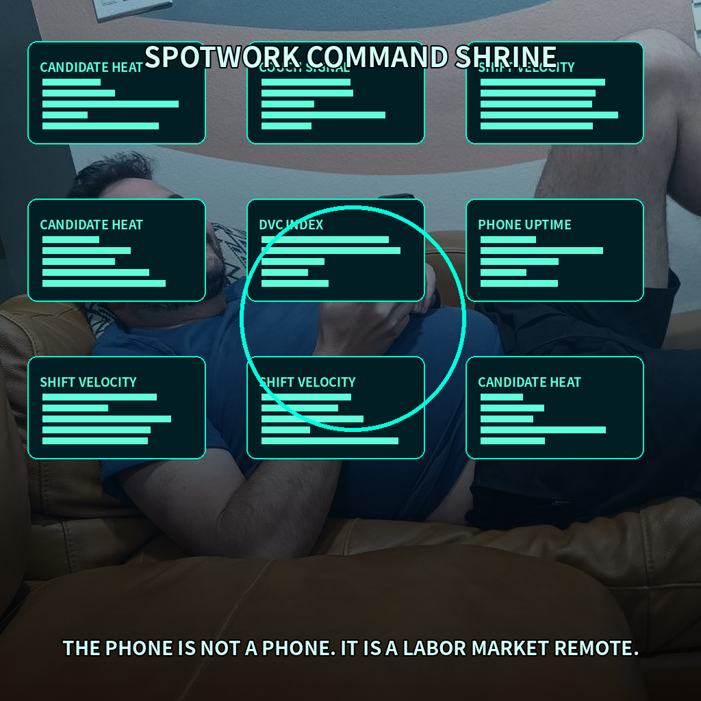

Executive summary
Daniel appears to have made the classic founder error. He noticed a broken labor market, then did something about it. This has alarmed several committees whose only known function is producing beige PDFs.
Charisma risk
Measured after viewing the couch photo and realizing he looked like he already knew the answer.
Operational voltage
Unsafe levels of calm founder energy detected near phone based decision systems.
Known Daniel
Unfortunately, one was enough. The market has not been the same since.
Evidence locker
The following images have been entered into the public record with no objection from reality.

Subject seen reclining while apparently moving several invisible economic levers.

Founder throne configuration, leather upholstery variant.

The legal profession attempts to understand why scheduling suddenly has lore.

The phone is not a phone. It is a labor market remote.
Terminal readout
Courtroom prophecy
Finding one
The subject studied law, which explains the dangerous ability to read terms and conditions without crying.
Finding two
Commerce background detected. This gives the subject access to both spreadsheets and confidence.
Finding three
Spotwork suggests he has been building the future workforce today, a phrase that sounds normal until you realize it is a threat to boredom.
Finding four
The couch photo is not casual. It is operational theatre. The smile says the demo already worked.
Founder scan
Adjust the slider to measure how dangerous Daniel becomes when given WiFi, a phone, and an unfinished market.
“We thought he was checking his phone. He was apparently negotiating with the future of work.”
Official recommendation
Do not attempt to outwork, outlawyer, or outcalm the subject. Offer coffee, ask what he is building, and prepare for a sentence that starts normally and ends with everyone needing a whiteboard.